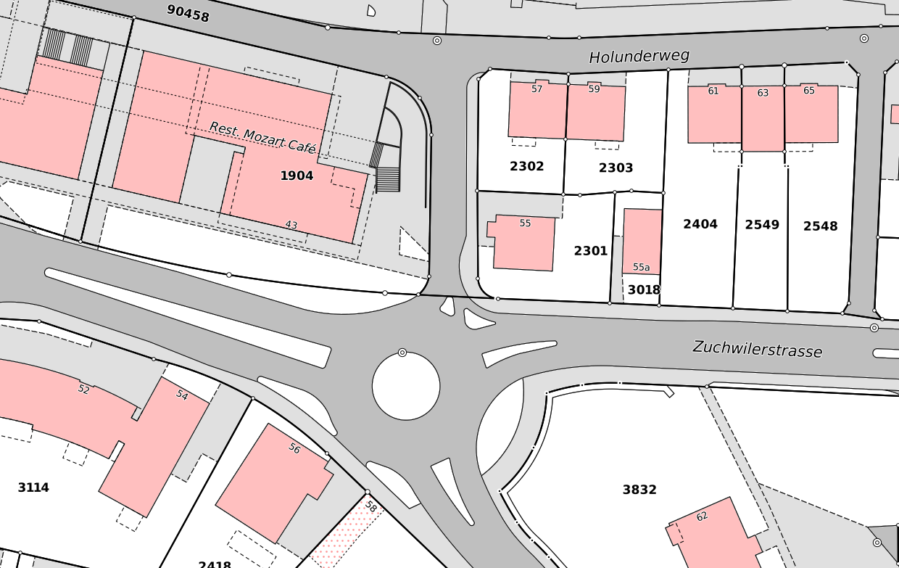
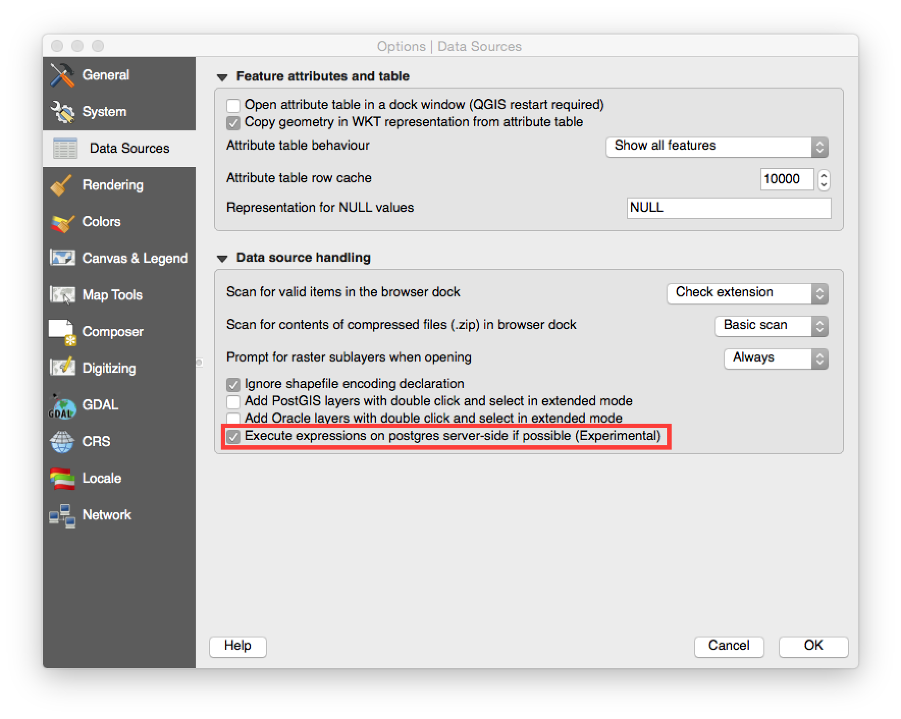
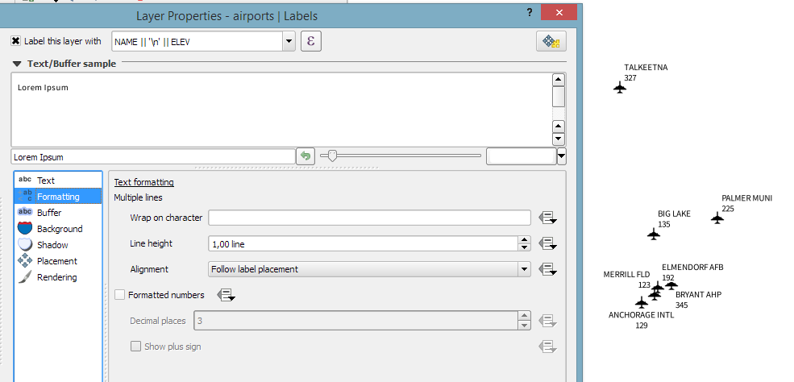
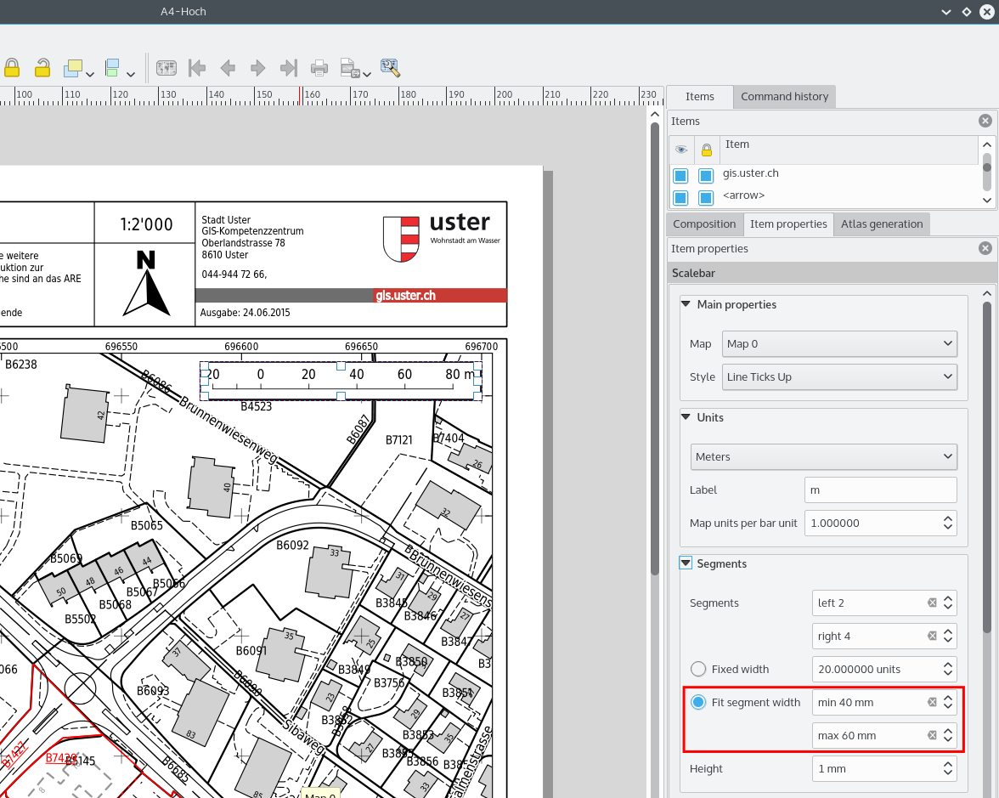
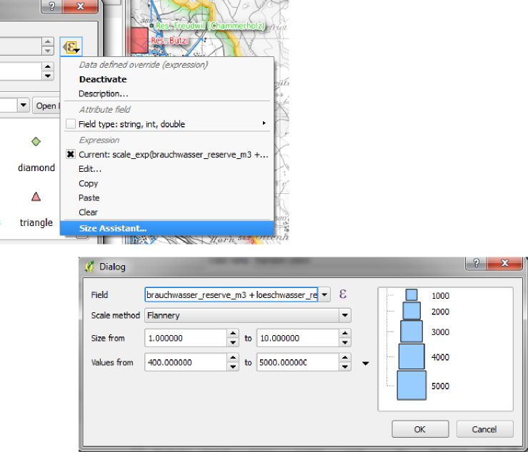

Modifications apportées par QGIS 2.10¶
Voici le journal des modifications de la dernière version de QGIS - version 2.10.0 “Pisa” - ville hôte de notre rencontre des développeurs en Mars 2010.
Dernière version
Il s’agit de la dernière version de notre série publiée tous les 4 mois. Elle vous donne accès aux nouvelles fonctionnalités que nous avons développées et représente la pointe du développement QGIS. Si vous travaillez dans un environnement de production où vous voulez être plus restreint dans le déploiement de nouvelles fonctionnalités aux utilisateurs, nous fournissons aussi une version à long terme (LTR) de QGIS. La version LTR est la version 2.8.2 et elle est disponible sur download.qgis.org. Les versions LTR seront corrigées de leurs bugs pendant un an et les fonctionnalités seront gelées sur cette version (pas de nouvelles fonctionnalités ajoutées, uniquement des corrections de bogues et des mises à jour triviales). Les fonctionnalités offertes par QGIS 2.10 “Pisa” seront incluses dans la prochaine version LTR (qui devrait sortir dans l’année 2016) et utiliser cette version vous offre une excellente opportunité pour tester les nouvelles fonctions qui arriveront dans la prochaine LTR.
Nouvelles Fonctionnalités dans QGIS 2.10 “Pisa”
QGIS 2.10.0 inclut de nombreuses nouvelles fonctionnalités et améliorations pour rendre plus complet et utile le plus populaire des logiciels SIG libres. Mais à chaque fois que de nouvelles fonctionnalités sont ajoutées au logiciel, elles introduisent potentiellement de nouveaux bugs. Donc, si vous avez des problèmes avec cette version, reportez-les en utilisant le système de suivi de bugs de QGIS.
Remerciements
Nous souhaitons remercier tous les développeurs, rédacteurs, testeurs et les nombreuses personnes qui ont donné volontairement de leur temps (ou financé des personnes pour le faire).
From the QGIS community we hope you enjoy this release! If you wish to donate time, money or otherwise get involved in making QGIS more awesome, please wander along to qgis.org and lend a hand!
Enfin nous souhaitons remercier nos sponsors officiels pour les soutiens financiers inestimables à ce projet :
- Sponsor GOLD : Asia Air Survey, Japon
- Sponsor SILVER : Sourcepole AG, Suisse
- Sponsor SILVER : State of Vorarlberg, Autriche
- Sponsor SILVER: Office of Public Works, Irlande, Irlande
- SILVER Sponsor: AGH University of Science and Technology, Krakow, Poland
- Sponsor BRONZE : www.molitec.it, Italy
- Sponsor BRONZE : www.argusoft.de, Germany
- Sponsor BRONZE : www.openrunner.com, France
- Sponsor BRONZE: GKG Kassel,(Dr.-Ing. Claas Leiner), Allemagne
- Sponsor BRONZE: Customer Analytics, USA
- Sponsor BRONZE: Urbsol, Australie
- Sponsor BRONZE: MappingGIS, Espagne
- Sponsor BRONZE: Lutra Consulting, UK
- Sponsor BRONZE: ADLARES GmbH, Allemagne
- Sponsor BRONZE: Avioportolano Italia, Italie
- Sponsor BRONZE: GeoSynergy, Australia
- Sponsor BRONZE : Gaia3D, South Korea
- Sponsor BRONZE: Royal Borough of Windsor and Maidenhead, UK
- Sponsor BRONZE : Chartwell Consultants Ltd, Canada
- Sponsor BRONZE : Trage Wegen vzw, Belgium
- Sponsor BRONZE : GIS-Support, Pologne
- Sponsor BRONZE : GIS3W, Italy
- Sponsor BRONZE : GFI - Gesellschaft fr Informations technologie mbH, Germany
- Sponsor BRONZE : Faculty of Geology, Geophysics and Environmental Protection, AGH, University of Science and Technology, Poland
A current list of donors who have made financial contributions large and small to the project can be seen on our donors list. If you would like to become and official project sponsor, please visit our sponsorship page for details. Sponsoring QGIS helps us to fund our six monthly developer meetings, maintain project infrastructure and fund bug fixing efforts.
QGIS est un logiciel libre et vous n’avez aucune obligation de payer quoi que ce soit pour l’utiliser. En fait, nous souhaitons encourager les gens à l’utiliser le plus possible, sans s’intéresser à leur état financier ou à leur statut social. Nous croyons que fournir aux gens des outils décisionnels spatiaux permettra d’améliorer la société.
- Général
- Fonctionnalité: les paramètres de jointure peuvent maintenant être édités.
- Fonctionnalité: Les couches avec jointures peuvent maintenant être filtrées.
- Fonctionnalité: Améliorations générales
- Fonctionnalité: Amélioration de la gestion des écrasements des fichiers de projet
- Fonctionnalité: Nouveau moteur géométrique
- Outils d’analyse
- Explorateur
- Fournisseurs de données
- Gestion de données
- Fonctionnalité: Les champs virtuels peuvent maintenant être mis à jour
- Fonctionnalité: Edition de ligne avec auto-complétion pour les contrôles d’édition de type ValueRelation
- Fonctionnalité: Améliorations du gestionnaire de Bases de Données
- Fonctionnalité: Filtres chaînés pour les contrôles de formulaire basés sur des relations
- Diagrammes
- Numérisation
- Étiquetage
- Composeur de cartes
- Programmation
- Serveur QGIS
- Style
- Fonctionnalité: Correspondance entre les catégories et les styles
- Fonctionnalité: Variation des tailles de symboles en utilisant le rendu gradué
- Fonctionnalité: Nouvelle option pour empêcher le découpage automatique des entités par rapport à l’emprise de la carte
- Fonctionnalité: L’échelle de taille et de rotation ont été supprimées du menu avancé
- Fonctionnalité: Propriétés définies par les données des symboles de police
- Fonctionnalité: Visualisation et modification du rendu gradué par un histogramme
- Fonctionnalité: Expressions de taille, de rotation et d’épaisseur de ligne au niveau de la liste des symboles
- Fonctionnalité: Effets de couche pour les couches et les couches de symboles
Général¶
Fonctionnalité: les paramètres de jointure peuvent maintenant être édités.¶
Il est maintenant possible d’éditer les paramètres de jointure (tels que le préfixe de jointure ou les colonnes à joindre) après la création de la jointure. Avant ce changement, il fallait supprimer et recréer la jointure complète.

Fonctionnalité: Les couches avec jointures peuvent maintenant être filtrées.¶
Avant la version 2.10 une couche ne pouvait pas être filtrée si elle avait une jointure. Maintenant, elle peut être filtrée mais uniquement en utilisant les colonnes de la table d’origine.

Fonctionnalité: Améliorations générales¶
Les améliorations qui sont listées ci-dessous ont été apportées à cette version:
- Gestion des couches de nuages de points de PostGIS.
- Améliorations des barres d’icônes et des icônes dans les widgets mobiles pour occuper moins d’espace sur l’écran et pour une meilleure apparence sous OSX.
- Améliorations de l’extension et du pilote de données GRASS.
- Gestion des écritures non-latin pour les étiquettes courbes (le long d’un linéaire).
- Grandes améliorations et meilleure robustesse pour la calculatrice raster et les outils de géo-référencement.
- Amélioration de l’IHM et du processus de la fenêtre des propriétés des étiquettes en ce qui concerne les paramètres définis par les données.

Fonctionnalité: Amélioration de la gestion des écrasements des fichiers de projet¶
Désormais, QGIS 2.10 vous avertira lorsque vous essayerez de sauvegarder votre projet et que la date de dernière modification de celui-ci aura été modifiée. Cette fonctionnalité est très utile si plus d’un seul utilisateur ou si plus d’une session travaillent sur le même fichier et qu’ils tentent d’enregistrer leur modification.
Cette fonctionnalité a été développée par :* Jürgen Fischer (norBIT)

Fonctionnalité: Nouveau moteur géométrique¶
QIGS 2.10 dispose d’un nouveau moteur géométrique. Normalement, vous ne devriez pas voir beaucoup de différences dans l’interface utilisateur mais ce moteur est la base de futures applications géospatiales à développer. Cette nouvelle implémentation amène la gestion des géométries courbes (par exemple lorsque vous voulez représenter un rond-point avec un cercle et non un polygone de forme circulaire avec de nombreux segments) et gère également les valeurs z et m dans les géométries. Pour utiliser les courbes dans QGIS vous devrez utiliser PostGIS ou un autre système de bases de données capable de gérer expressément les géométries curvilignes. Si vous le souhaitez, vous pouvez vous faire la main avec l’exercice suivant dans votre base de données PostGIS:
-- Table: curves DROP TABLE curves;
CREATE TABLE curves (
id bigserial NOT NULL,
geometry geometry(CURVEPOLYGON, 4326),
name text,
CONSTRAINT p_key PRIMARY KEY (id)
);
INSERT INTO curves VALUES ( 1, st_geomfromtext(
'CURVEPOLYGON(CIRCULARSTRING(1 1,1 2, 2 2, 2 1, 1 1))', 4326), 'test');
Ajoutez ensuite la couche curves à votre projet.
Cette fonctionnalité a été développée par :* Marco Hugentobler (Sourcepole AG)
Cette fonctionnalité a été financée par :* KantonSolothurn, Suisse

Outils d’analyse¶
Fonctionnalité: Nouveau panneau de résumé statistique¶
Il peut afficher des statistiques résumées (ex: la moyenne, l’écart-type, etc.) sur un champ ou une expression à partir d’une couche vecteur ou une sélection. Les informations sont disponibles dans un nouveau panneau que vous pouvez activer à partir du menu Vue -> Panneaux -> Statistiques. Merci de prendre note que vous ne pouvez générer des statistiques sur sur les couches vecteurs qui disposent d”une colonne numérique.

Fonctionnalité: Utilisation des fonctions logarithmiques dans la calculatrice raster¶
La calculatrice raster (Raster -> Calculatrice Raster dans le menu QGIS) est un outil qui vous permet de réaliser des opérations matricielles sur une ou plusieurs couches raster. Avec QGIS 2.10, vous pouvez maintenant utiliser les fonctions ln et log10 dans la calculatrice.

Fonctionnalité: Nouvelles fonctionnalités de statistiques zonales¶
Les statistiques zonales permettent d’extraire des valeurs agrégées de pixels compris dans un polygone. Les nouvelles fonctionnalités ont été ajoutées à cet outil:
- Vous pouvez maintenant sélectionner quelles statistiques calculer.
- De nouvelles statistiques ont été ajoutées (médiane, écart-type, min, max, plage, minorité, majorité et variation).
- Sélection de la bande raster à utiliser pour une extraction de statistiques.
A noter que l’outil de statistiques zonales est une extension du cœur de code (une extension qui est intégrée à l’installation de QGIS) mais qu’elle est désactivée par défaut. Vous devez l’activer dans le gestionnaire d’extensions; un menu pour les statistiques zonales apparaîtra dans le menu Raster.

Explorateur¶
Fonctionnalité: Nouveau panneau de propriétés pour le navigateur¶
Lorsque vous utilisez les panneaux du navigateur QGIS (Vue -> Panneaux -> Navigateur), vous pouvez maintenant activer un panneau de propriétés en bas de l’arbre du système de fichiers. Toute source de données sur laquelle vous cliquez verra ses propriétés affichées dans ce panneau. Cela facilite la consultation d’information basique sur le jeu de données sélectionné. Pour activer la vue des propriétés, utilisez l’icône i en haut du panneau de navigation.

Fonctionnalité: Nouvelle icône pour le navigateur¶
Le navigateur QGIS est une application séparée et autonome qui vous permet de naviguer et de consulter les jeux de données géographiques disponibles (issus de votre système de fichiers, de connexions à des bases de données, de services web, etc.). Dans les précédentes versions de QGIS, nous utilisions une icône très semblable à celle de l’application QGIS ce qui entraînait de la confusion pour de nombreux utilisateurs. Pour réduire le désagrément d’ouvrir la mauvaise application, nous avons créé une nouvelle icône pour le navigateur QGIS.

Fournisseurs de données¶
Fonctionnalité : Améliorations de l’export DXF¶
L’export DXF a été améliorée de façon continue dans les trois dernières versions de QGIS. Cette version amène une meilleure conversion par blocs du SVG ou des marqueurs simples vers le DXF; elle corrige quelques bogues et erreurs qui pouvaient créer des fichiers DXF incomplets (non lisibles). Dans la capture d’écran, vous pouvez observer la vue originale dans QGIS sur la gauche et le rendu du fichier DXF dans Autodesk TrueView sur la droite.
Voir également cet article sur qgis.ch expliquant ce qui est pris en charge et ce qui ne l’est pas.
Cette fonctionnalité a été développée par :* Jürgen Fischer (norBIT)
Cette fonctionnalité a été financée par: Communautés de Morges, Uster, Vevey et SIGE

Fonctionnalité: Filtres d’expression joués par le serveur PostGIS¶
Dans QGIS 2.10 vous pouvez maintenant filtrer les entités directement du côté du serveur de base de données. Seules les expressions gérées seront envoyées à la base de données. Les expressions qui utilisent des opérateurs non pris en compte ou des fonctions seront simplement évalués en local.
Pour utiliser cette fonctionnalité, vous devez l’activer dans Préférences -> Options -> Sources de données. Si votre expression de filtre est conforme à PostgreSQL, elle sera jouée directement au niveau du serveur. Vous pouvez également utiliser cette fonctionnalité à travers l’API Python par exemple en utilisant ces appels:
QgsFeatureRequest().setFilterExpression( expression )
ou
QgsVectorLayer::getFeatures( expression )

Gestion de données¶
Fonctionnalité: Les champs virtuels peuvent maintenant être mis à jour¶
Dans la version 2.8, vous deviez supprimer et recréer les champs virtuels pour changer l’expression de calcul du champ. Dans la version 2.10, vous pouvez aller dans l’onglet Champs et appuyer sur le petit bouton Expression pour ouvrir l’éditeur d’expression et mettre à jour l’expression utilisée dans le champ virtuel.
Cette fonctionnalité a été développée par: Matthias Kuhn (OpenGIS)
Cette fonctionnalité a été financée par: City of Uster, Suisse

Fonctionnalité: Edition de ligne avec auto-complétion pour les contrôles d’édition de type ValueRelation¶
Le contrôle de formulaire d’édition de valeur relationnelle pour les couches vecteurs (Couche -> Propriétés -> Champs -> Outil d'édition -> Valeur relationnelle) peut maintenant être paramétré pour permettre l’auto-complétion au fur et à mesure que vous écrivez dans la boîte de saisie du formulaire de saisie.

Fonctionnalité: Améliorations du gestionnaire de Bases de Données¶
Il y a deux nouvelles fonctionnalités dans le gestionnaire de bases de données :
Les couches provenant d’une requête ne nécessitent plus une colonne avec des entiers uniques
Une colonne avec des entiers uniques n’est plus nécessaire pour charger une couche QGIS provenant d’une requête SQL. Une valeur auto-incrémentée sera utilisée à la place.
Intégration d’un constructeur de requête SQL
Une nouvelle fenêtre dans DB Manager permet de faciliter la création de requêtes SQL en utilisant des contrôles où les noms des tables, les noms des colonnes et les fonctions peuvent être sélectionnées par l’utilisateur. Elle a été portée depuis l’extension QSpatialite et fonctionne pour les pilotes PostGIS et Spatialite.
Cette fonctionnalité a été financée par: MEDDE (Ministère Français du Développement Durable)
Cette fonctionnalité a été développée par : Hugo Mercier / Oslandia

Fonctionnalité: Filtres chaînés pour les contrôles de formulaire basés sur des relations¶
Vous pouvez actuellement utiliser les contrôles de formulaire de référence de relation pour sélectionner des données liées dans d’autres tables. L’utilisateur peut alors sélectionner les éléments graphiquement en les sélectionnant dans la carte si l’entité liée dispose d’une géométrie ou bien choisir un élément avec un identifiant. Pour faciliter la sélection attributaire il est maintenant possible de restreindre les options disponibles avec des filtres (chaînés ou non). Si les filtres sont non chaînés, les choix sont combinés avec une clause « ET » pour déterminer les options disponibles. Si les filtres sont chaînés, un mode hiérarchique est activé de manière à ce que chaque filtre montre uniquement les entités qui correspondent au filtre précédent. C’est très utile pour sélectionner les données de manière hiérarchiques comme Ville -> Rue -> Numéro.
Cette fonctionnalité a été développée par: Matthias Kuhn (OpenGIS)
Cette fonctionnalité a été financée par: SIGE

Diagrammes¶
Fonctionnalité: Améliorations des diagrammes¶
Les fonctions de diagrammes dans QGIS vous permettent d’ajouter des camemberts ou des histogrammes sur les entités de la carte. Dans cette version, nous avons apporté les changements suivants:
- Les diagrammes peuvent être désactivés sans perdre leur configuration.
- Ajout d’une case à cocher afin de toujours afficher les diagrammes d’une couche.
- L’interface utilisateur des diagrammes a été rafraîchie pour simplifier la boîte de dialogue et la rendre plus accessible à l’utilisateur.
- Les classes de diagramme sont maintenant affichées dans la légende de la couche.

Numérisation¶
Fonctionnalité: Amélioration de l’outil de rotation des géométries¶
L’outil de rotation de géométrie est un outil de numérisation avancée qui vous permet d’effectuer une rotation arbitraire à la géométrie d’une entité. Les améliorations suivantes ont été apportées à cet outil:
- Vous pouvez maintenant utiliser une entrée numérique dans l’outil de rotation.
- Vous pouvez utiliser une liste déroulante pour paramétrer les angles.
- Ajout de la gestion de l’accrochage aux angles (directement activé
en utilisantshift + clic``). - L’ancrage de la rotation est défini en utilisant
Ctrl + clicet non en bougeant la souris.

Étiquetage¶
Fonctionnalité: Alignement des étiquettes multi-lignes « En fonction du point »¶
Dans ce mode, l’alignement du texte des étiquettes est dépendant du placement final de l’étiquette par rapport au point. Ex: si l’étiquette est placée à gauche du point alors l’étiquette sera alignée à droite et inversement. Cela améliore l’apparence des étiquettes multi-lignes pour les couches de points.

Composeur de cartes¶
Fonctionnalité: Ajout d’un mode de dimensionnement de barre d’échelle pour tenir dans une largeur donnée¶
Dans les versions précédentes de QGIS, il était difficile d’utiliser les barres d’échelle lorsque la plage d’échelle était grande. La barre d’échelle était soir rapidement trop large ou trop étroite et il fallait adapter manuellement la taille des segments (unités par segment) après chaque changement d’échelle. Cela signifiait également que les barres d’échelle ne pouvaient pas vraiment être utilisées dans une impression continue d’Atlas ou avec QGIS Server où l’échelle de la carte n’est pas connue. Avec QGIS 2.10, vous pouvez maintenant indiquer une taille minimum ou maximum pour chaque longueur de segment en mm et QGIS adaptera automatiquement les unités par segment tout en conservant des valeurs arrondies.
N’oubliez pas également d’activer l’alignement de la barre d’échelle si vous voulez qu’elle soit centrée ou alignée à droite !
Cette fonctionnalité a été développée par: Sandro Mani (Sourcepole AG)
Cette fonctionnalité a été financée par: Kanton Glarus, Suisse

Programmation¶
Fonctionnalité: Améliorations destinées aux programmeurs¶
Nous avons réalisé de nombreuses modifications et améliorations au profit des développeurs :
- La version minimum de Qt4 est maintenant la version 4.8. Qt4 est une des plus importantes bibliothèques C++ qui est utilisée pour créer QGIS.
- Nouvelle classe
QgsStatisticalSummarypermettant de calculer des statistiques à partir d’une liste de nombres. - Possibilité de changer la source de données d’une couche vecteur.
- Partage implicite des classes
QgsField,QgsFields,QgsDataDefined,QgsFeature,QgsGeometry. - Les extensions peuvent maintenant créer leurs propres entrées dans le panneau de navigation à l’aide de deux classes:
QgsDataItemProvideretQgsDataItemProviderRegistry.

Serveur QGIS¶
Fonctionnalité: Gestion du paramètre de tolérance dans les requêtes WMS GetFeatureInfo¶
Lorsque vous utilisez des couches WMS servies par QGIS Server, vous pouvez maintenant indiquer une tolérance de distance par rapport au clic d’origine pour les requêtes GetFeatureInfo. Ceci est très important pour les appareils mobiles où il est difficile de pointer exactement une entité. Avant cette fonctionnalité, il était pratiquement impossible d’identifier un point ou une ligne sur un appareil mobile avec QGIS Server. Vous pouvez ajouter ces paramètres à vos requêtes GetFeatureInfo:
FI_POINT_TOLERANCE=16&FI_LINE_TOLERANCE=8&FI_POLYGON_TOLERANCE=4
et modifiez les valeurs de tolérance (en pixels) qui correspondent à vos besoins.
Cette fonctionnalité a été développée par :* Marco Hugentobler (Sourcepole AG)
Cette fonctionnalité a été financée par: City of Uster, Suisse

Style¶
Fonctionnalité: Correspondance entre les catégories et les styles¶
Ajout d’une option dans le menu avancé du rendu catégorisé pour définir les catégories en fonction des symboles dont le nom correspond dans la bibliothèques de style ou d’un fichier XML de style.

Fonctionnalité: Variation des tailles de symboles en utilisant le rendu gradué¶
Les moteurs de rendu composent le système de QGIS qui vous permet de créer des représentation cartographiques riches de vos données. Le rendu gradué fait varier la symbologie selon une valeur en constant changement dans une couche vecteur. Dans les versions précédentes de QGIS vous ne pouviez faire varier que la couleur (ex: en utilisant une couleur selon une rampe de couleur). Dans QGIS 2.10, le rendu gradué par symbole vous permet de faire varier la taille ou la couleur. Pour les couches de points, vous pouvez faire varier la taille du points, pour les lignes, vous pouvez faire varier la largeur de la ligne. Les couches de polygones ne peuvent faire varier que la couleur, la largeur de ligne n’est pas encore gérée.
Cette fonctionnalité a été développée par: Vincent Mora (Oslandia)
Cette fonctionnalité a été financée par: Agence de l’eau Adour-Garonne

Fonctionnalité: Nouvelle option pour empêcher le découpage automatique des entités par rapport à l’emprise de la carte¶
Cette option (située sous le menu de symboles avancés) désactive le découpage automatique des lignes et polygones selon l’emprise de la carte. Dans certains cas, ce découpage entraîne des erreurs dans la représentation (ex: remplissages de centroïdes où le centroïde doit rester au niveau du centroïde réel de l’entité).

Fonctionnalité: L’échelle de taille et de rotation ont été supprimées du menu avancé¶
Nous avons supprimé Échelle de taille et Rotation du menu Couche -> Propriétés -> Onglet Style -> Menu Avancé. Vous devriez plutôt définir la rotation en utilisant une expression ou un champ à chaque niveau de symbole. Les expressions utilisées dans les anciens projets sont converties en propriétés angle et taille définis par les données au niveau du symbole.
Cette fonctionnalité a été développée par: Vincent Mora (Oslandia)
Cette fonctionnalité a été financée par: Agence de l’eau Adour-Garonne

Fonctionnalité: Propriétés définies par les données des symboles de police¶
La majorité des propriétés des symboles de polices de caractères peuvent maintenant être définis par les données, y compris la taille du symbole, la rotation et le caractère.

Fonctionnalité: Visualisation et modification du rendu gradué par un histogramme¶
Un nouveau panneau d’histogramme a été ajouté au rendu gradué. Il permet d’afficher un histogramme interactif des valeurs du champ ou de l’expression utilisé pour le rendu. Les classes peuvent être définies ou ajoutées depuis l’histogramme.
Cette fonctionnalité a été financée par: ADUGA
Cette fonctionnalité a été développée par : Nyall Dawson

Fonctionnalité: Expressions de taille, de rotation et d’épaisseur de ligne au niveau de la liste des symboles¶
La taille et la rotation peuvent être définies en utilisant une expression pour tous les niveaux de symboles qui composent un marqueur. La largeur peut être définie par une expression pour tous les symboles composants une ligne.
Pour les symboles, une légende est générée pour les tailles variables. Cela permet d’afficher une légende d’analyse multivariée dans le cas où vous utilisez des couleurs par classes ou graduation.
Un assistant avec prévisualisation est disponible au niveau du bouton de définition par les données pour aider l’utilisateur à définir l’expression de taille. Trois méthodes sont disponibles: Flannery, Surface et Rayon.
Cette fonctionnalité a été développée par: Vincent Mora (Oslandia)
Cette fonctionnalité a été financée par: Agence de l’eau Adour-Garonne

Fonctionnalité: Effets de couche pour les couches et les couches de symboles¶
Les effets de couche ajoutent au déjà très larges capacités cartographiques de QGIS la possibilité d’ajouter différents effets de rendu dans la chaîne de rendu. Avec ces effets, vous pouvez placer une ombre portée sous le symbole, modifiant et mettant en valeur le rendu du symbole. Vous pouvez également utiliser ces effets l’un sur l’autre et indiquer si l’effet sera progressif (ex: s’applique lui-même sur l’état du rendu) ou discret (en ré-injectant la source géométrique dans la chaîne de rendu).
Note: Cette fonctionnalité est réservée aux utilisateurs avancés et vous devez noter que l’abus de cette fonctionnalité peut significativement ralentir le rendu. Vous devriez utiliser plusieurs profils de symbologie pour votre couche: une pour la génération en production et l’autre pour le mode brouillon.
Cette fonctionnalité a été développée par : Nyall Dawson
Cette fonctionnalité a été financée par: une initiative de financement partagé